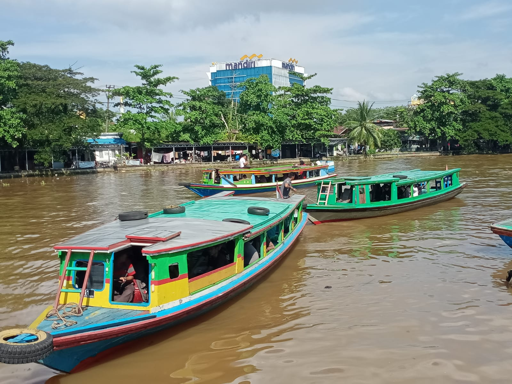

Sungai Martapura
Tentang Sungai Martapura
Sungai Martapura adalah ikon utama Kota Banjarmasin. Di sepanjang sungai ini, pengunjung bisa merasakan suasana khas “Kota Seribu Sungai” dengan pemandangan perahu kelotok, pasar terapung, dan rumah-rumah lanting di bantaran sungai.
Daya Tarik
- Wisata susur sungai dengan perahu kelotok.
- Pemandangan lampu hias yang indah di malam hari.
- Spot foto menarik di jembatan dan tepian sungai.
- Kuliner khas Banjar di warung pinggir sungai.
Tips Berkunjung
- Datang sore menjelang malam untuk menikmati lampu hias.
- Bawa kamera karena banyak spot foto menarik.
- Coba naik perahu kelotok di pagi hari untuk suasana segar.
- Siapkan uang tunai untuk jajan di warung pinggir sungai.
Informasi Praktis
Jam buka: 24 jam
Tiket masuk: Gratis (biaya perahu mulai Rp 15.000/orang)
Lokasi: Pusat Kota Banjarmasin
📍 Lihat di Google Maps
Tiket masuk: Gratis (biaya perahu mulai Rp 15.000/orang)
Lokasi: Pusat Kota Banjarmasin